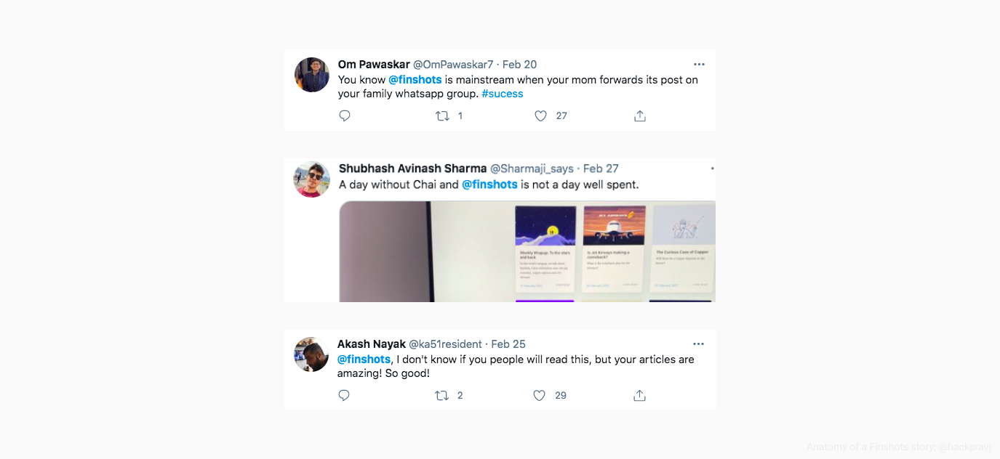
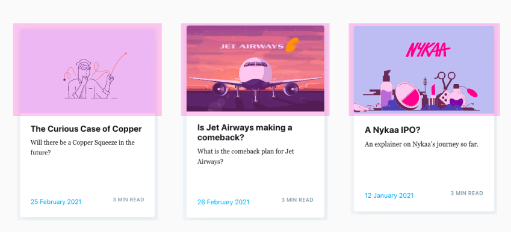
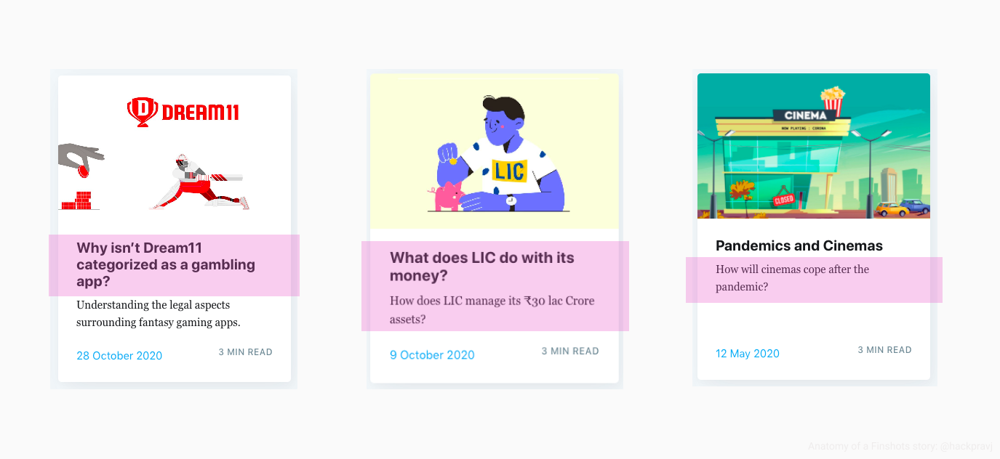
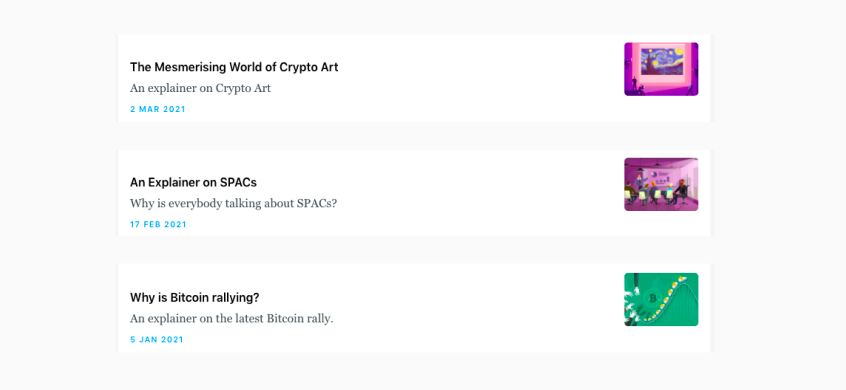
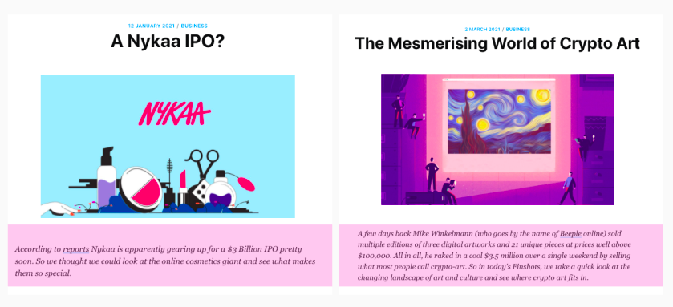
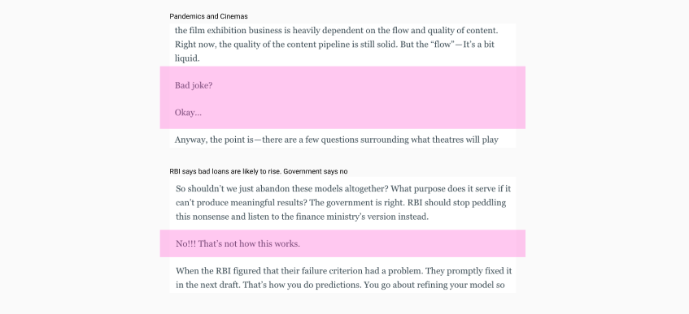
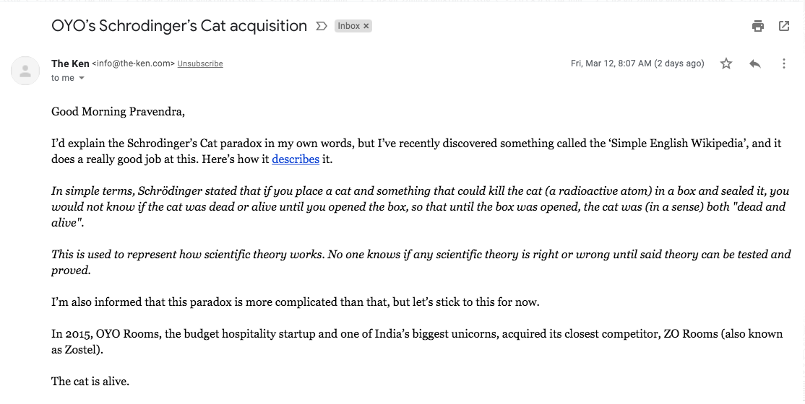

Finshots is an India-focused daily newsletter explaining the important financial news in a simplified language.
The application has nailed the financial-education category and was a winner of Google Play’s Best of 2020 award. 🏆
It has a 4.9/5 rating on the Play Store and has 100K+ downloads. On top of everything else, it has true fans loving the product and spreading the word around.

This article is a product-teardown with an objective to understand what sets the application apart from existing players. Taking off my daily reader’s hat, I tried to understand what is their secret sauce.
To sum it up, the secret sauce is a well-crafted storytelling structure.
As a reader, a preview card is the first thing you see about a story and the card has everything to get you hooked.
It starts with the story’s artwork that is contextual to each story.

Now compare it to other channels where a stock photo would be used for a similar topic.The quality is at par, and you can feel the effort invested as soon as you see the image.
The objective here is to connect the readers with the story before they start reading it.
After the artwork, comes the “Big Question.”
It is a question placed in either the story’s title or the description and does two things well.

First, it puts a question in the reader’s mind as a trigger (following classical conditioning). A question crafted so beautifully that the mind can’t resist thinking about it.
Second, it informs what exactly will the reader get out of the story once finished.
It’s no secret that how you present an idea (storytelling) matters, but the content selection isn’t an afterthought too.
Finshots tend to hit when the topic is hot, knowing that the readers will exhibit a factor called Recency-bias, preferring the recent trends/topics over any historic topic.

And these are topics that other outlets would typically publish in a laggard style, more to prevent FOMO rather than to educate their readers.
Humans have a need to complete, we don’t like to leave things incomplete.
Building on the same phenomenon, additional information (summary) is provided at the top of the story.
You clicked on the story card, saw the summary, and now you’re hooked.

Paul Graham has an essay titled Write Like You Talk, suggesting exactly what the title says.
Here’s a simple trick for getting more people to read what you write: write in spoken language.
Finshots’s articles follow a similar structure, where it feels like reading the transcription of someone speaking and explaining the topic to the reader.
The story talks back to you, using witty lines at times. Such lines are used to change the topic OR connect with the next part of the story.

Last I checked, not every other news outlet was using a witty personality in their stories.
Another news outlet pulling this off in a completely unique manner is The Ken, where they have a story-specific introductory email hitting your inbox every morning.
Equally similar, just that the author is more explicit and isn’t hidden.

Overall, their structured execution is a case-study in itself.
They’ve created a well-oiled engine that consistently generates simple/to-the-point stories for their readers.
It would be interesting to learn more about the behind-the-scene of the engine. Pretty sure there will be so many Quality-Check/Control lessons to learn about.
Topic backlog/pipeline/prioritization
Title/Big-question ideation and evaluation process
If you’ve found this article helpful, what do you think about sharing it with someone?
Meanwhile, I’m available at @hackpravj if you want to know 🖖🏻 whenever 🖖🏻 I write another such article.